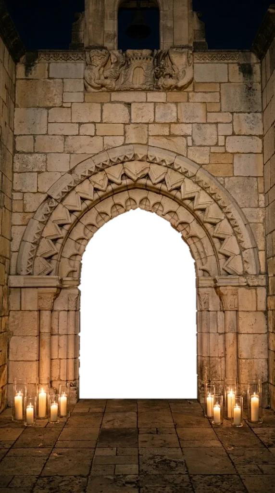
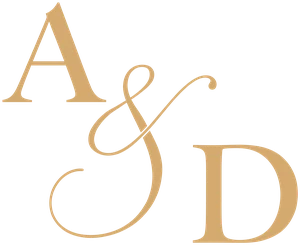

You Are Expected
Push the Doors Open
Together with Their Families
Alyssa Vera&Derek Pacqué
request the honor of your presence
at the celebration of their marriage
Sunday, the fourteenth of February
two thousand twenty-seven
Ceremony at Half Past Five
Doors open at five o’clock
The Ancient Spanish Monastery
North Miami Beach, Florida
Reception to follow
Black Tie Optional · Masks Encouraged
Kindly reply by
Monday, January 4, 2027
Enter your first and last name to find your invitation
We can’t wait to celebrate with you
see the invitation on one page